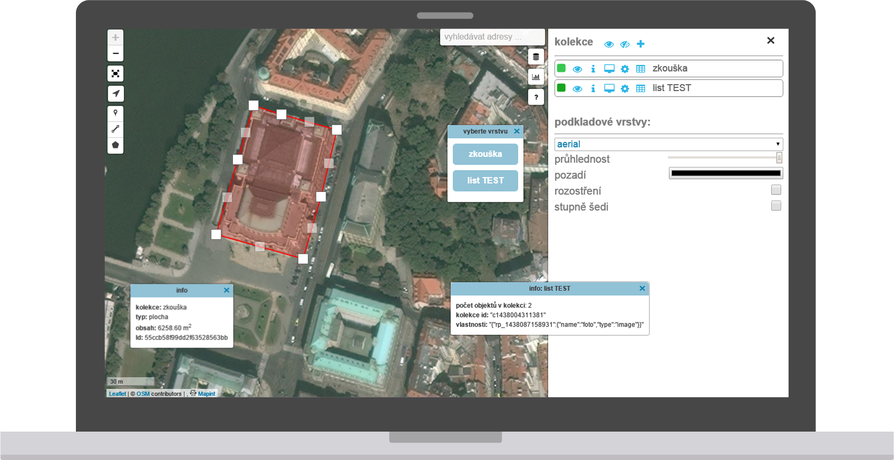
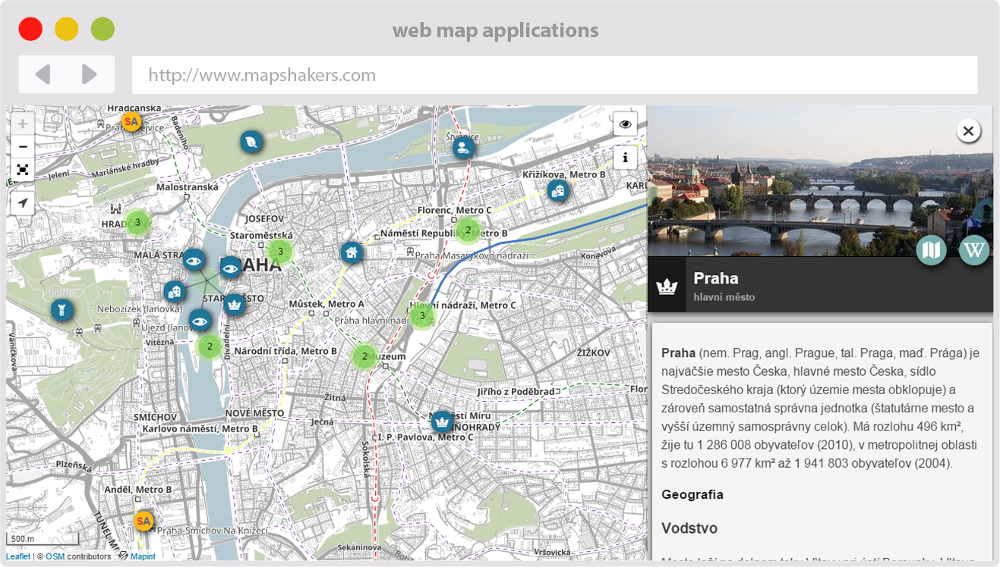
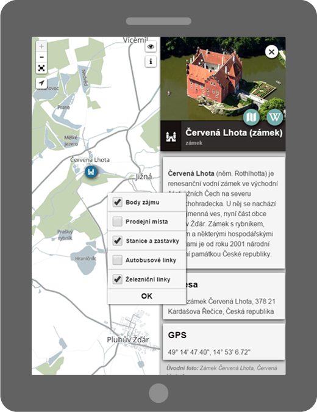
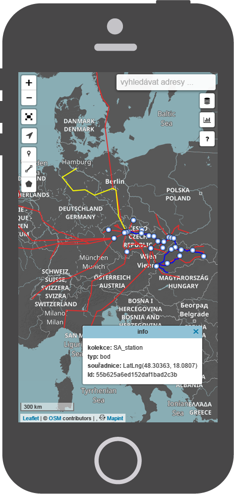

web map applications
Do you
- collect spatial data?
- need data always be with you?
- want a current overview anytime?
- like on the fly data analysis?
- need very fast application?
- want clear responsive design?
- expect high level security?

That's why we are here! We create web map applications exactly for you!


fast applications
for our web maps we use the high-end technologies
responsive design
our web maps are awesome on every device, take us on desktop browser, laptop, iPad, tablet or smartphone


cloud services
we store your data on our cloud, you have your data anywhere on any device and of course all safely